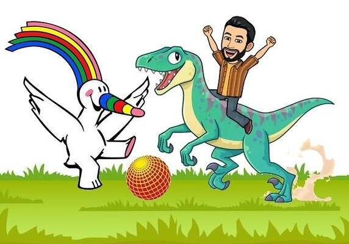

Licenciamiento

- Autor: Joaquín Candañedo Arancón
- Descripción: Contenido teórico para trabajar en 1º CFGB de Informática de Oficina (y en 1º CFGB de Informática y Comunicaciones) el módulo de OPERACIONES AUXILIARES PARA LA CONFIGURACIÓN Y LA EXPLOTACIÓN.
- Licencia: Licencia Creative Commons Reconocimiento Compartir igual 4.0